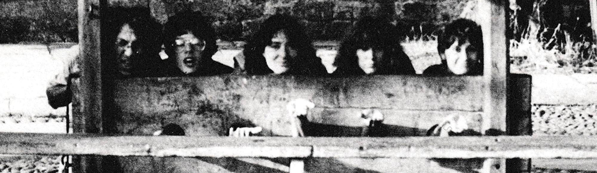

Foto della redazione di Un'Ambigua Utopia in visita all'editore Armenia (Numero 7 di Un'Ambigua Utopia, 1980).
Un'Ambigua Utopia è il nome di un collettivo che, a cavallo tra il 1977 e il 1982, ha dato vita all'omonima rivista di fantascienza radicale.
5 anni fa Antonio Caronia, forse il più noto animatore del periodico, ha donato alla Cascina Autogestita Torchiera l'archivio dei numeri originali, degli appunti e dei racconti inediti della rivista, per restituirli ai "movimenti" e renderli fruibili nella Bibliotork Interzona Caronia.
In omaggio alla sua memoria oggi liberiamo una selezione dei materiali tratti dal fondo Caronia.
Per consultazione e prestito di volumi ogni lunedì dalle 18.
Info: gallineintorchiera@inventati.org
Esplora l'archivio della Bibliotork Interzona Caronia
Esplora Un'Ambigua Utopia